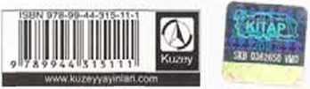

TANRI YANILGISI
zamanlaması mükemmel, coşkulu ve parlakça savunulmuş “...eğlenceli, oldukça bilgilendirici, görkemli yazılmış ...aldığımız ilk dini eğitimden bu yana başımıza bela olan boş inançlardan kaynaklanan bu zırvalara kapıldığımız için zekice azarlanıyoruz”
Kod l.iddle, Sanduv Times
“Heyecanlı ve neşeli bir kitap. Dawkins, kuvvetli tezlerinin tüm gücüyle kükreyerek geliyor...”
Joaıı Bakovell. Guardian
“Ateşli, akıllıca, eğlenceli, moral verici ve hepsinin ötesinde ölümcül derecede lüzumlu..."
Daily E.ypress
“Tanrı Yanılgısı olağanüstü ilginç bir kitap... parıldayan dili ile anlatılmış bu kitap sadece okumayı bir zevk haline getirmekle kalmıyor, aynı zamanda geniş bir yelpazede düşünmemiz için beynimizi uyarıyor”
Financial Times
“Da\vkins, bir gölge süper güç tarafından sarmalanmış, elverişli ve rahat bir ortamda bulunan bir insan dünyasına ihtiyaç duymayan okuyuculara bir parça akıl ve entelektüel bakışla haz veriyor”
Ueruld Tribüne
“Dünyayı bir kez daha yıkayan, köpüklü bir boş inanç gelgitine karşı, bütün kariyeri boyunca hayatın kendisinin zor ve muhteşem sebebini kanıtlayan büyük bir bilimadamından. fevkalade savaşçı bir atak"
Johann llari. Independent
